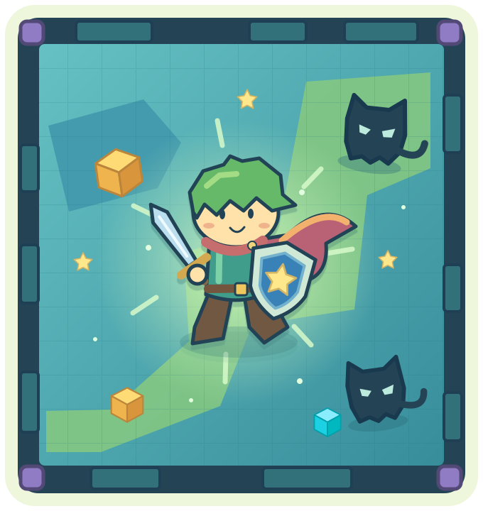

移动，找准机会
WASD 或方向键移动，空格 冲刺。手机横屏，用左下摇杆。
绿芽勇者的星光试炼。带上剑和星星盾牌，读懂小怪的动作，守住这座蓝绿色的小地牢。
独立打斗特别版 · 3 轮 / 10 个小怪 · 无需登录
首次加载约 15 MB，准备好后即可游玩。

WASD 或方向键移动，空格 冲刺。手机横屏，用左下摇杆。
J / U 挥剑，按住 K / I 举盾。临近命中时举盾，可弹反后加倍反击。
先近战，再盾兵与弓手，最后混编。每轮结束点 NEXT ROUND；通关或失败可重新开始。